Welcome to KaFE (Karlsruhe Fit Environment)¶
kafe is a data fitting framework designed for use in undergraduate physics lab courses. It provides a basic Python toolkit for fitting models to data as well as visualisation of the data and the model function. It relies on Python packages such as numpy and matplotlib, and uses the Python interface to the minimizer Minuit contained in the data analysis framework ROOT.
kafe Overview¶

Graphical output generated with kafe.
The kafe package provides a rather general approach to fitting of a model function to two-dimensional data points with correlated uncertainties in both dimensions. The Python API guarantees full flexibility for data input. Helper functions for file-based input and some examples are available for own applications.
Applications range from performing a simple average of measurements to complex situations with both correlated (systematic) and uncorrelated (statistical) uncertainties on the measurements of the x and y values described by a non-linear model function depending on a large number of parameters.
The model function describes the y values as a function of the x-values and a set of model parameters {p}, y=f(x; {p}). Full flexibility exists as model functions are implemented as Python code. Again, examples are provided, but user implementations are supported as well.
Fitting is based on the χ²-method, assuming Gaussian errors and correlations described by covariance matrices. The level of agreement between data points and the fit model is expressed in terms of the χ² probability, i. e. the probability to find less agreement between data and model than actually observed. Full access to the covariance matrix of the - typically correlated - model parameters is provided.
The graphical output visualises the data and the fit model at the best-fit-point of the parameters and also shows the uncertainty of the fit model as a light band surrounding the line representing the model function. Plotting of confidence level contours for pairs of parameters or profiling of the χ² curves for each of the fit parameters are also provided.
Code Structure¶

Code structure of the kafe package
The code of kafe is centred around very few classes to handle Data input, fitting and plotting, as illustrated in the figure on the right-hand side.
Data, their uncertainties, and, optionally, the correlations of the uncertainties - are passed through the interface of the kafe class Dataset. Input can be included in the Python code or is read from files in standardised or user-defined formats. The representation of the data within the Dataset class is minimalistic, consisting of the x and y values and the full covariance matrices of their uncertainties. Correlated errors between x and y values are not supported yet, as such use cases are rare.
A helper function, build_dataset(), is available to transform various error models, like a combination of independent and correlated errors or common absolute or relative errors, to this basic format.
Adding a model function, taken either from a prepared set of fit functions within kafe or from a user’s own Python implementation, results in a Fit object, which controls the minimizer Minuit. Access to the final results of the fitting procedure is provided by data members of the Fit class.
One or multiple fit objects, i. e. the input data and model functions(s) at the best-fit point in parameter-space, are visualised by the class Plot with the help of matplotlib functionality. The plot module also contains functionality to display the model uncertainty by surrounding the model function at the best-fit values of the parameters by a light band, the one-σ uncertainty band, which is obtained by propagation of the uncertainties of the fit parameters taking into account their correlations.
Two-dimensional contour lines of pairs of parameters are obtained with the method plot_contour() of the Fit class, which internally relies on the mncont method of the Minuit package. Contour curves are obtained from a scan of the χ²-function around a fixed value, where each point on the curve represents the minimum with respect to all other free parameters in the fit, thus taking into account the correlation of a pair of parameters with all other parameters of the model.
In a similar way, the method plot_profile() provides profiled χ² curves, i. e. the value of the minimal χ² as a function of one parameter while all other parameters are allowed to vary.
Example¶
Only very few lines of Python code are needed to perform fits with kafe. The snippet of code shown below performs a fit of a quadratic function to some data points with uncertainties:
from kafe import *
from kafe.function_library import quadratic_3par
#### build a Dataset instance:
myDataset = build_dataset(
[0.05,0.36,0.68,0.80,1.09,1.46,1.71,1.83,2.44,2.09,3.72,4.36,4.60],
[0.35,0.26,0.52,0.44,0.48,0.55,0.66,0.48,0.75,0.70,0.75,0.80,0.90],
yabserr=[0.06,0.07,0.05,0.05,0.07,0.07,0.09,0.1,0.11,0.1,0.11,0.12,0.1],
title='some data',
axis_labels=['$x$', '$y=f(x)$'])
#### Create the Fit object
myFit = Fit(myDataset, quadratic_3par)
# Set initial values and error estimates
myFit.set_parameters((0., 1., 0.2), (0.5, 0.5, 0.5))
# Do the Fit
myFit.do_fit()
#### Create result plots and output them
myPlot = Plot(myFit)
myPlot.plot_all()
myPlot.save('kafe_example0.pdf') # to file
myPlot.show() # to screen
The output in text form (also available via various get_...() methods of the Fit class) contains the values of the parameters at the best-fit point, their correlation matrix and the fit probability. The example produces the following graphical output:

Example: Data points with one-dimensional error bars compared to a quadratic model function with kafe.
The parametrisation chosen in this example leads to a strong correlation of the fit parameters. This can be graphically visualised by adding the following lines at the end of the example:
### Create and save contour plots
contour1 = myFit.plot_contour(0, 1, dchi2=[1.,2.3])
contour2 = myFit.plot_contour(0, 2, dchi2=[1.,2.3])
contour3 = myFit.plot_contour(1, 2, dchi2=[1.,2.3])
contour1.savefig('kafe_example0_contour1.pdf')
contour2.savefig('kafe_example0_contour2.pdf')
contour3.savefig('kafe_example0_contour3.pdf')
The example code produces two confidence-level contours for each pair of parameters (with id=0, id=1 and id=2), corresponding to an increase of the χ²-function with respect to the minimum by the values given in the list passed as the third parameter to the method myFit.plot_contour(). The resulting graphical representation, as shown below, displays the 39% contours, corresponding to the one-sigma errors, and the 68% contours. The uncertainties on each parameter, indicated by the error bars, are also shown. They correspond to the projections of the one-sigma contours on the axes.

Contour curves of a pairs of paramters a, b and c of the example above, calculated with kafe.
More and advanced examples - like fitting different models to one data set, comparison of different data sets with model functions, averaging of correlated measurements or fits with a large number of parameters - are provided as part of the kafe distribution and are described in the section Examples below. They may serve as a starting point for own applications.
Installation¶
To install kafe, unpack the archive kafe-<version>.tgz , change to the sub-directory kafe-<version>/src/ and follow the installation instructions below.
1.) Install using pip:
To install kafe using the Pip installer (http://www.pip-installer.org/), simply run the helper script as root:
./install.shIf you don’t have Pip installed, use:
easy_install pipTo remove kafe using pip, just run the helper script:
./uninstall.sh
Install using setuptools:
Installing using Python’s setup tools works, but does not provide a clean uninstall. Use this method if installing with Pip is not possible:
python setup.py install
kafe needs a working version of the CERN data analysis framework root, freely available at http://root.cern.ch
Dependencies¶
The recommended versions of external packages for kafe are as follows, the version numbers in parentheses refer to the minimum requirements:
Python packages:
* SciPy >= 0.12.0 (0.9.0), which includes
- NumPy >= 1.7.1 (1.6.1) and
- matplotlib >= 1.2.0 (1.1.1)
Other dependencies:
* ROOT >= 5.34 (http://root.cern.ch)
* Qt4 >= 4.8.5 `(could work with other versions)`
* PyQt >= 3.18.1 `(could work with other versions)`
* A LaTeX distribution `(tested with texlive)`
Be sure that the version of ROOT you use is compiled with PyROOT support. For Python to see the PyROOT bindings, the following environment variables must be set correctly:
export ROOTSYS=<directory where ROOT is installed>
export LD_LIBRARY_PATH=${LD_LIBRARY_PATH}:$ROOTSYS/lib
export PYTHONPATH=$ROOTSYS/lib:$PYTHONPATH
For more info, refer to [http://root.cern.ch/drupal/content/pyroot].
Qt is needed because it is the supported interactive front-end for matplotlib. Other front-ends are not supported and can cause weird behaviour.
LaTeX is used by matplotlib for displaying labels and mathematical expressions on graphs.
Fit examples, utilities, tips and tricks¶
A wide range of applications of the kafe core and the usage of the helper functions is exemplified here. All of them are contained in the sub-directory examples/ of the kafe distribution and are intended to serve as a basis for user projects.
Example 1 - model comparison¶
To decide whether a model is adequate to describe a given set of data, typically several models have to be fit to the same data. Here is the code for a comparison of a data set to two models, namely a linear and an exponential function:
# import everything we need from kafe
from kafe import *
# additionally, import the two model functions we want to fit:
from kafe.function_library import linear_2par, exp_2par
############
# Load the Dataset from the file
my_dataset = Dataset(input_file='dataset.dat', title="Example Dataset")
### Create the Fits
my_fits = [Fit(my_dataset, exp_2par),
Fit(my_dataset, linear_2par)]
### Do the Fits
for fit in my_fits:
fit.do_fit()
### Create the plots, save and show output
my_plot = Plot(my_fits[0], my_fits[1])
my_plot.plot_all(show_data_for=0) # show data only once (it's the same data)
my_plot.save('plot.pdf')
my_plot.show()
The file dataset.dat contains x and y data in the standard kafe data format, where values and errors (and optionally also correlation coefficients) are given for each axis separately. # indicates a comment line, which is ignored when reading the data:
# axis 0: x
# datapoints uncor. err.
0.957426 3.0e-01
2.262212 3.0e-01
3.061167 3.0e-01
3.607280 3.0e-01
4.933100 3.0e-01
5.992332 3.0e-01
7.021234 3.0e-01
8.272489 3.0e-01
9.250817 3.0e-01
9.757758 3.0e-01
# axis 1: y
# datapoints uncor. err.
1.672481 2.0e-01
1.743410 2.0e-01
1.805217 2.0e-01
2.147802 2.0e-01
2.679615 2.0e-01
3.110055 2.0e-01
3.723173 2.0e-01
4.430122 2.0e-01
4.944116 2.0e-01
5.698063 2.0e-01
The resulting output is shown below. As can be seen already from the graph, the exponential model better describes the data. The χ² probability in the printed output shows, however, that the linear model would be marginally acceptable as well:
linear_2par
chi2prob 0.052
HYPTEST accepted (CL 5%)
exp_2par
chi2prob 0.96
HYPTEST accepted (CL 5%)

Output of example1 - compare two models
The contour curves of the two fits are shown below and reflect the large correlations between the fit parameters. The right plot of the profile χ² curve shows that there is a slight deviation from the parabolic curve in the fist fit of a non-linear (exponential) function. For more details on the profiled χ² curve see the discussion of example 3, where the difference is more prominent.

Contour curves and a profile χ² curve for the fits in example 1
Example 2 - two fits and models¶
Another typical use case consists of comparing two sets of measurements and the models derived from them. This is very similar to the previous example with minor modifications:
...
############
# Workflow #
############
# Load two Datasets from files
my_datasets = [Dataset(input_file='dataset1.dat', title="Example Dataset 1"),
Dataset(input_file='dataset2.dat', title="Example Dataset 2")]
# Create the Fits
...
# Do the Fits
...
# Create the plots
my_plot.plot_all() # this time without any arguments, i.e. show everything
...
This results in the following output:

Output of example2 - comparison of two linear fits.
Although the parameters extracted from the two data sets agree within errors, the uncertainty bands of the two functions do not overlap in the region where the data of Dataset 2 are located, so the data are most probably incompatible with the assumption of an underlying single linear model.
Example 3 - non-linear fit with non-parabolic errors¶
Very often, when the fit model is a non-linear function of the parameters, the χ² function is not parabolic around the minimum. A very common example of such a case is an exponential function prarametrised as shown in the code fragment below. Minuit contains a spacial algorithm, Minos, which returns correct errors also in this case. Instead of using the curvature the minimum, Minos follows the χ² function from the minimum to the point where it crosses the the value minimum+up, where up=1 corresponds to one standard deviation in χ² fits. During the scan of the χ² function at different values of each parameter the minimum with respect to all other parameters in the fit is determined, thus making sure that all correlations among the parameters are taken into account. In case of a parabolic χ² function, the Minos errors are identical to those obtained by the Hesse algorithm, but are typically larger or asymmetric in other cases.
The method kafe.do_fit() executes the Minos algorithm after completion of a fit and prints the Minos errors if the deviation from the parabolic result are larger than 5% .
A graphical visualisation is provided by the method plot_profile() , which displays the profile χ² curve for the parameter with name or index passed as an argument to the method.
The relevant code fragments and the usage of the method kafe.fit.plot_profile() are illustrated here:
...
# definition of the fit function
@ASCII(x_name="t", expression="A0*exp(-t/tau)")
# Set some LaTeX-related parameters for this function
@LaTeX(name='A', x_name="t",
parameter_names=('A_0', '\\tau{}'),
expression="A_0\\,\\exp(\\frac{-t}{\\tau})")
@FitFunction
def exponential(t, A0=1, tau=1):
return A0 * exp(-t/tau)
...
# Load the data, perform fit and plot
my_dataset = Dataset(input_file='dataset.dat', title="Example Dataset")
my_fit = Fit(my_dataset, exponential)
my_fit.do_fit()
my_plot = Plot(my_fit)
my_plot.plot_all()
# --> display contours and profile
contour = my_fit.plot_contour(0, 1, dchi2=[1.,2.3])
profile1=my_fit.plot_profile(0)
profile2=my_fit.plot_profile(1)
# Show the plots
my_plot.show()
The data points were generated using a normalisation factor of A0=1. and a lifetime τ=1.. The resulting fit output below demonstrates that this is well reproduced within uncertainties:

Output of example 3 - Fit of an exponential
The contour A0 vs τ, however, is not an ellipse, as shown in the figure below. The profiled χ² curves are also shown; they deviate significantly from parabolas. The proper one-sigma uncertainty in the sense of a 68% confidence interval is read from these curves by determining the parameter values where the χ² curves cross the horizontal lines at a value of Δχ²=1 above the minimum. The two-sigma uncertainties correspond to the intersections with the horizontal line at Δχ²=4.

Contour and profile χ² curves of example 3
Note: a more parabolic behaviour is achieved by using the width parameter λ=1/τ in the parametrisation of the exponential function.
Example 5 - non-linear multi-parameter fit (damped oscillation)¶
This example shows the fitting of a more complicated model function to data collected from a damped harmonic oscillator. In such non-linear fits, stetting the initial values is sometimes crucial to let the fit converge at the global minimum. The Fit object provides the method set_parameters() for this purpose. As the fit function for this problem is not a standard one, it is defined explicitly making use of the decorator functions available in kafe to provide nice type setting of the parameters. This time, the function parse_column_data() is used to read the input, which is given as separate columns with the fields
<time> <Amplitude> <error on time> <error on Amplitude>
Here is the example code:
...
from kafe import *
from numpy import exp, cos
# Model function definition #
# ---------------------------
# Set an ASCII expression for this function
@ASCII(x_name="t", expression="A0*exp(-t/tau)*cos(omega*t+phi)")
# Set some LaTeX-related parameters for this function
@LaTeX(name='A', x_name="t",
parameter_names=('a_0', '\\tau{}', '\\omega{}', '\\varphi{}'),
expression="a_0\\,\\exp(-\\frac{t}{\\tau})\,"
"\cos(\\omega{}\\,t+\\varphi{})")
@FitFunction
def damped_oscillator(t, a0=1, tau=1, omega=1, phi=0):
return a0 * exp(-t/tau) * cos(omega*t + phi)
# ---- Workflow #
# load the experimental data from a file
my_dataset = parse_column_data('damped_oscillation.dat',
field_order="x,y,xabserr,yabserr", title="Damped Oscillator",
axis_labels=['Time t', 'Amplitude'])
# --- Create the Fit
my_fit = Fit(my_dataset, damped_oscillator)
# Set the initial values for the fit:
# a_0 tau omega phi
my_fit.set_parameters((1., 2., 6.28, 0.8))
my_fit.do_fit()
# --- Create and output the plots
my_plot = Plot(my_fit)
my_plot.plot_all()
#my_plot.save('plot.pdf')
my_fit.plot_correlations() # all contours and profiles
my_plot.show()
This is the resulting output:

Example 5 - fit of the time dependence of the amplitude of a damped harmonic oscillator.
The fit function is non-linear, and, furthermore, there ist not a single local minimum - e.g. a shift in phase of 180° corresonds to a change in sign of the amplitude, and valid solutions are also obtained for multiples of the base frequency. Checking of the validity of the fit result is threfore important. The method plot_correlations() provides the contours of all pairs of parameters and the profiles for each of the parameters and displays them in a matrix-like arrangement. Distorted contour-ellipses show wether the result is affected by near-by minima, and the profiles allow to correctly assign the parameter uncertainties in cases where the parabolic approximation is not precise enough.

Confidence contours and profiles for example 5.
Example 6 - linear multi-parameter fit¶
This example is not much different from the previous one, except that the fit function, a standard fourth-degree polynomial from the module function_library, is modified to reflect the names of the problem given, and matplotlib functionality is used to influence the output of the plot, e.g. axis names and linear or logarithmic scale.
It is also shown how to circumvent a problem that often arises when errors depend on the measured values. For a counting rate, the (statistical) error is typically estimated as the square root of the (observed) number of entries in each bin. For large numbers of entries, this is not a problem, but for small numbers, the correlation between the observed number of entries and the error derived from it leads to a bias when fitting functions to the data. This problem can be avoided by iterating the fit procedure:
In a pre-fit, a first approximation of the model function is determined, which is then used to calculate the expected errors, and the original errors are replaced before performing the final fit. Note that the numbers of entries in the bins must be sufficiently large to justify a replacement of the (asymmetric) Poisson uncertainties by the symmetric uncertainties implied by the χ²-method.
The implementation of this procedure needs accesses some more fundamental methods of the Dataset, Fit and FitFunction classes. The code shown below demonstrates how this can be done with kafe, using some of its lower-level, internal interfaces:
from kafe.function_library import poly4
# modify function's independent variable name to reflect its nature:
poly4.x_name = 'x=cos(t)'
poly4.latex_x_name = 'x=\\cos(\\theta)'
...
# Set the axis labels appropriately
my_plot.axis_labels = ['$\\cos(\\theta)$', 'counting rate']
...
# load the experimental data from a file
my_dataset = parse_column_data(
'counting_rate.dat',
field_order="x,y,yabserr",
title="Counting Rate per Angle")
### pre-fit
# error for bins with zero contents is set to 1.
covmat = my_dataset.get_cov_mat('y')
for i in range(0, len(covmat)):
if covmat[i, i] == 0.:
covmat[i, i] = 1.
my_dataset.set_cov_mat('y', covmat) # write it back
# Create the Fit
my_fit = Fit(my_dataset, poly4)
# fit_label="Linear Regression " + dataset.data_label[-1])
# perform an initial fit with temporary errors (minimal output)
my_fit.call_minimizer(final_fit=False, verbose=False)
# set errors using model at pre-fit parameter values:
# sigma_i^2=cov[i, i]=n(x_i)
fdata = my_fit.fit_function.evaluate(my_fit.xdata,
my_fit.current_parameter_values)
np.fill_diagonal(covmat, fdata)
my_fit.current_cov_mat = covmat # write new covariance matrix
### end pre-fit - rest is as usual
my_fit.do_fit()
# Create the plots and --
my_plot = Plot(my_fit)
# -- set the axis labels
my_plot.axis_labels = ['$\\cos(\\theta)$', 'counting rate']
# -- set scale linear / log
my_plot.axes.set_yscale('linear')
...
This is the resulting output:

Output of example 6 - counting rate.
Example 7 - another non-linear multi-parameter fit (double-slit spectrum)¶
Again, not much new in this example, except that the model is now very non-linear, the intensity distribution of light after passing through a double-slit. The non-standard model definition again makes use of the decorator mechanism to provide nice output - the decorators (expressions beginning with ‘@’) can safely be omitted if LaTeX output is not needed. Setting of appropriate initial conditions is absolutely mandatory for this example, because there exist many local minima of the χ² function.
Another problem becomes obvious when carefully inspecting the fit function definition: only two of the three parameters g, b or k can be determined, and therefore one must be kept fixed, or an external constraint must be applied. Failing to do so will result in large, correlated errors on the parameters g, b and k as an indication of the problem.
Fixing parameters of a model function is achieved by the method fix_parameters(), and a constraint within a given uncertainty is achieved by the method constrain_parameters() of the Fit class.
Here are the interesting pieces of code:
...
# Model function definition #
# Set an ASCII expression for this function
@ASCII(x_name="x", expression="I0*(sin(k/2*b*sin(x))/(k/2*b*sin(x))"
"*cos(k/2*g*sin(x)))^2")
# Set some LaTeX-related parameters for this function
@LaTeX(name='I', x_name="\\alpha{}",
parameter_names=('I_0', 'b', 'g', 'k'),
expression="I_0\\,\\left(\\frac{\\sin(\\frac{k}{2}\\,b\\,\\sin{\\alpha})}"
"{\\frac{k}{2}\\,b\\,\\sin{\\alpha}}"
"\\cos(\\frac{k}{2}\\,g\\,\\sin{\\alpha})\\right)^2")
@FitFunction
def double_slit(alpha, I0=1, b=10e-6, g=20e-6, k=1.e7):
k_half_sine_alpha = k/2*sin(alpha) # helper variable
k_b = k_half_sine_alpha * b
k_g = k_half_sine_alpha * g
return I0 * (sin(k_b)/(k_b) * cos(k_g))**2
...
# Set the initial values for the fit
# I b g k
my_fit.set_parameters((1., 20e-6, 50e-6, 9.67e6))
# fix one of the (redundant) parameters, here 'k'
my_fit.fix_parameters('k')
...
If the parameter k in the example above has a (known) uncertainty, is is more appropriate to constrain it within its uncertainty (which may be known from an independent measurement or from the specifications of the laser used in the experiment). To take into account a wave number k known with a precision of 10‘000 the last line in the example above should be replaced by:
...
my_fit.constrain_parameters(['k'], [9.67e6], [1.e4])
...
This is the resulting output:

Example 7 - fit of the intensity distribution of light behind a double slit with fixed or constrained wave length.
Example 8 - fit of a Breit-Wigner Resonance to data with correlated errors¶
This example illustrates how to define the data and the fit function in a single file - provided by the helper function buildFit_fromFile() in module file_tools. Parsing of the input file is done by the function parse_general_inputfile(), which had already been introduced in Example 4. The definition of the fit function as Python code including the kafe decorators in the input file, however, is new. Note: because spaces are used to to separate data fields in the input file, spaces needed for proper Python indentation have to be replaced by ‘~’. The last key in the file defines the start values of the parameters and their initial ranges.
The advantage of this approach is the location of all data and the fit model in one place, which is strictly separated from the Python code. The Python code below is thus very general and can handle a large large variety of problems without modification (except for the file name, which could easily be passed on the command line):
from kafe import *
from kafe.file_tools import buildFit_fromFile
# ---------------------------------------------------------
fname = 'LEP-Data.dat'
# initialize fit object from file
BWfit = buildFit_fromFile(fname)
BWfit.do_fit()
#
BWplot = Plot(BWfit)
BWplot.plot_all()
BWplot.save("plot.pdf")
BWplot.show()
The magic happens in the input file, which now has to provide all the information needed to perform the fit:
# Fit of a Breit-Wigner function to
# measurements of hadronic Z cross sections at LEP
# - - - - - - - - - - - - - - - - - - - - - - - - - - - - - - - -
# Meta-data for plotting
*TITLE LEP Hadronic Cross Section ($\sigma^0_\mathrm{had}$)
*xLabel $E_CM$
*xUnit $\mathrm{GeV}$
*yLabel $\sigma^0_{\mathrm{had}}$
*yUnit $\mathrm{nb}$
#----------------------------------------------------------------------
# DATA: average of hadronic cross sections measured by
# ALEPH, DELPHI, L3 and OPAL around 7 energy points at the Z resonance
#----------------------------------------------------------------------
# CMenergy E err
*xData
88.387 0.005
89.437 0.0015
90.223 0.005
91.238 0.003
92.059 0.005
93.004 0.0015
93.916 0.005
# Centre-of-mass energy has a common uncertainty
*xAbsCor 0.0017
# sig^0_h sig err # rad.cor sig_h measured
*yData
6.803 0.036 # 1.7915 5.0114
13.965 0.013 # 4.0213 9.9442
26.113 0.075 # 7.867 18.2460
41.364 0.010 # 10.8617 30.5022
27.535 0.088 # 3.9164 23.6187
13.362 0.015 # -0.6933 14.0552
7.302 0.045 # -1.8181 9.1196
# cross-sections have a common relative error
*yRelCor 0.0007
*FITLABEL Breit-Wigner-Fit {\large{( with s-dependent width )}}
*FitFunction
# Breit-Wigner with s-dependent width
@ASCII(expression='s0*E^2*G^2/[(E^2-M^2)^2+(E^4*G^2/M^2)]')
@LaTeX(name='f', parameter_names=('\\sigma^0', 'M_Z', '\\Gamma_Z'),
expression='\\frac{\\sigma^0\\, M_Z^2\\Gamma^2}'
'{((E^2-M_Z^2)^2+(E^4\\Gamma^2 / M_Z^2))}')
@FitFunction
def fitf(E, M=91.2, G=2.5, s0=41.0):
~~~~return s0*E*E*G*G/((E*E-M*M)**2+(E**4*G*G/(M*M)))
*InitialParameters # set initial values and ranges
91.2 0.1
2.5 0.1
41. 0.5
Here is the output:

Output of example 8 - Fit of a Breit-Wigner function.
This example also contains a code snippet demonstrating how to plot contours by calling the Fit object’s plot_contour() method. This is the code:
# plot pairs of contours at 1 sigma, 68%, 2 sigma and 95%
cont_fig1 = BWfit.plot_contour(0, 1, dchi2=[1.,2.3,4.,5.99])
cont_fig2 = BWfit.plot_contour(0, 2, dchi2=[1.,2.3,4.,5.99])
cont_fig3 = BWfit.plot_contour(1, 2, dchi2=[1.,2.3,4.,5.99])
# save to files
cont_fig1.savefig("kafe_BreitWignerFit_contour12.pdf")
cont_fig2.savefig("kafe_BreitWignerFit_contour13.pdf")
cont_fig3.savefig("kafe_BreitWignerFit_contour23.pdf")
The resulting pictures show that parameter correlations are relatively small:

Contours generated in example 8 - Fit of a Breit-Wigner function.
Example 9 - fit of a function to histogram data¶
This example brings us to the limit of what is currently
possible with kafe. Here, the data represent the
center of a histogram bins ad the number of entries,  ,
in each bin. The (statistical) error is typically estimated
as the square root of the (observed) number of entries in each bin.
For large numbers of entries, this is not a problem,
but for small numbers, especially for bins with 0 entries,
the correlation between the observed number of entries and
the error derived from it leads to a bias when fitting
functions to the histogram data. In particular, bins with
zero entries cannot be handled in the χ²-function, and are
typically omitted to cure the problem. However, a bias
remains, as bins with downward fluctuations of the
observed numbers of events get assigned smaller errors
and hence larger weights in the fitting procedure - leading
to the aforementioned bias.
,
in each bin. The (statistical) error is typically estimated
as the square root of the (observed) number of entries in each bin.
For large numbers of entries, this is not a problem,
but for small numbers, especially for bins with 0 entries,
the correlation between the observed number of entries and
the error derived from it leads to a bias when fitting
functions to the histogram data. In particular, bins with
zero entries cannot be handled in the χ²-function, and are
typically omitted to cure the problem. However, a bias
remains, as bins with downward fluctuations of the
observed numbers of events get assigned smaller errors
and hence larger weights in the fitting procedure - leading
to the aforementioned bias.
These problems are avoided by using a likelihood method for such use cases, where the Poisson distribution of the uncertainties and their dependence on the values of the fit model is properly taken into account. However, the χ²-method can be saved to some extend if the fitting procedure is iterated. In a pre-fit, a first approximation of the model function is determined, where the error in bins with zero entries is set to one. The model function determined from the pre-fit is then used to calculate the expected errors for each bin, and the original errors are replaced before performing the final fit. Note that the numbers of entries in the bins must be sufficiently large to justify a replacement of the (asymmetric) Poisson uncertainties by the symmetric uncertainties implied by the χ²-method.
The code shown below demonstrates how to get a grip on such more complex procedures with more fundamental methods of the Dataset, Fit and FitFunction classes:
...
# Load Dataset from file
hdataset = Dataset(input_file='hdataset.dat', title="Data for example 9")
# error for bins with zero contents is set to 1.
covmat = hdataset.get_cov_mat('y')
for i in range(0, len(covmat)):
if covmat[i, i] == 0.:
covmat[i, i] = 1.
hdataset.set_cov_mat('y', covmat) # write it back
# Create the Fit instance
hfit = Fit(hdataset, gauss, fit_label="Fit of a Gaussian to histogram data")
#
# perform an initial fit with temporary errors (minimal output)
hfit.call_minimizer(final_fit=False, verbose=False)
#
#re-set errors using model at pre-fit parameter values:
# sigma_i^2=cov[i, i]=n(x_i)
fdata=hfit.fit_function.evaluate(hfit.xdata, hfit.current_parameter_values)
np.fill_diagonal(covmat, fdata)
hfit.current_cov_mat = covmat # write back new covariance matrix
#
# now do final fit with full output
hfit.do_fit()
# and create, draw, save and show plot
...
Here is the output, which shows that the parameters of the standard normal distribution, from which the data were generated, are reproduced well by the fit result:

Output of example 9 - Fit of a Gaussian distribution to histogram data
Example 10 - Plotting with kafe: properties of a Gauss curve¶
This example shows how to access the kafe plot objects to annotate plots with matplotlib functionality.
A dummy object Dataset is created with points lying exactly on a Gaussian curve. The Fit will then converge toward that very same Gaussian. When plotting, the data points used to “support” the curve can be omitted.

Output of example 10 - properties of a Gauss curve.
kafe Documentation – module descriptions¶
The following documentation of functions and methods of relevance to the user interface was generated from the DocStrings contained in the Python code of the kafe package. For further information or if in doubt about the exact functionality, users are invited to consult the source code.
__init__ Module¶
kafe – a Python package for fitting and plotting for use in physics lab courses.
This Python package allows fitting of user-defined functions to data. A dataset is represented by a Dataset object which stores measurement data as NumPy arrays. The uncertainties of the data are also stored in the Dataset as an error matrix, allowing for both correlated and uncorrelated errors to be accurately represented.
The constructor of a Dataset object accepts several keyword arguments and can be used to construct a Dataset from input data which has been loaded into Python as NumPy arrays. Alternatively, a plain-text representations of a Dataset can be read from a file.
Also provided are helper functions which construct a Dataset object from a file containing column data (one measurement per row, column order can be specified), or from a keyword-driven input format.
dataset Module¶
- class kafe.dataset.Dataset(input_file=None, data=None, cov_mats=None, title='Untitled Dataset', basename=None, axis_labels=['x', 'y'], axis_units=['', ''])¶
Bases: object
The Dataset object is a data structure for storing measurement and error data. In this implementation, the Dataset has the compulsory field data, which is used for storing the measurement data, and another field cov_mats, used for storing the covariance matrix for each axis.
There are two ways a Dataset can be constructed. The most straightforward way is to specify an input file containing a plain-text representation of the dataset:
>>> my_dataset = Dataset(input_file='/path/to/file')
or
>>> my_dataset = Dataset(input_file=my_file_object)
If an input_file argument is provided, the data and cov_mats arguments are ignored. The Dataset plain-text representation format is as follows:
# x data x_1 sigma_x_1 x_2 sigma_x_2 cor_x_12 ... ... ... ... x_N sigma_x_N cor_x_1N ... cor_x_NN # y data y_1 sigma_y_1 y_2 sigma_y_2 cor_y_12 ... ... ... ... y_N sigma_y_N cor_y_1N ... cor_y_NN
Here, the sigma_... represents the fully uncorrelated error of the data point and cor_..._ij is the correlation coefficient between the i-th and j-th data point.
Alternatively, field data can be set by passing iterables as arguments. Available arguments for this purpose are:
data : tuple/list of tuples/lists/arrays of floats
a tuple/list of measurement data. Each element of the tuple/list must be iterable and be of the same length. The first element of the data tuple/list is assumed to be the x data, and the second to be the y data:
>>> my_dataset = Dataset(data=([0., 1., 2.], [1.23, 3.45, 5.62]))
Alternatively, x-y value pairs can also be passed as data. The following is equivalent to the above:
>>> my_dataset = Dataset(data=([0.0, 1.23], [1.0, 3.45], [2.0, 5.62]))
In case the Dataset contains two data points, the ordering is ambiguous. In this case, the first ordering (x data first, then y data) is assumed.
cov_mats : tuple/list of numpy.matrix (optional)
a tuple/list of two-dimensional iterables containing the covariance matrices for x and y, in that order. Covariance matrices can be any sort of two-dimensional NxN iterables, assuming N is the number of data points.
>>> my_dataset = Dataset(data=([0., 1., 2.], [1.23, 3.45, 5.62]), cov_mats=(my_cov_mat_x, my_cov_mat_y))
This keyword argument can be omitted, in which case covariance matrices of zero are assumed. To specify a covariance matrix for a single axis, replace the other with None.
>>> my_dataset = Dataset(data=([0., 1., 2.], [1.23, 3.45, 5.62]), cov_mats=(None, my_cov_mat_y))
title : string (optional)
the name of the Dataset. If omitted, the Dataset will be given the generic name ‘Untitled Dataset’.axis_labels : list of strings (optional)
labels for the x and y axes. If omitted, these will be set to 'x' and 'y', respectively.axis_units : list of strings (optional)
units for the x and y axes. If omitted, these will be assumed to be dimensionless, i.e. the unit will be an empty string.- cov_mat_is_regular(axis)¶
Returns True if the covariance matrix for an axis is regular and False if it is singular.
- axis : 'x' or 'y'
- Axis for which to check for regularity of the covariance matrix.
- cov_mats = None¶
list of covariance matrices
- get_axis(axis_alias)¶
Get axis id from an alias.
- axis_alias : string or int
- Alias of the axis whose id should be returned. This is for example either '0' or 'x' for the x-axis (id 0).
- get_cov_mat(axis, fallback_on_singular=None)¶
Get the error matrix for an axis.
- axis : 'x' or 'y'
- Axis for which to load the error matrix.
- fallback_on_singular : numpy.matrix or string (optional)
- What to return if the matrix is singular. If this is None (default), the matrix is returned anyway. If this is a numpy.matrix object or similar, that is returned istead. Alternatively, the shortcuts 'identity' or 1 and 'zero' or 0 can be used to return the identity and zero matrix respectively.
- get_data(axis)¶
Get the measurement data for an axis.
- axis : string
- Axis for which to get the measurement data. Can be 'x' or 'y'.
- get_data_span(axis, include_error_bars=False)¶
Get the data span for an axis. The data span is a tuple (min, max) containing the smallest and highest coordinates for an axis.
- axis : 'x' or 'y'
- Axis for which to get the data span.
- include_error_bars : boolean (optional)
- True if the returned span should be enlarged to contain the error bars of the smallest and largest datapoints (default: False)
- get_formatted(format_string='.06e', delimiter='t')¶
Returns the dataset in a plain-text format which is human-readable and can later be used as an input file for the creation of a new Dataset.
The format is as follows:
# x data x_1 sigma_x_1 x_2 sigma_x_2 cor_x_12 ... ... ... ... x_N sigma_x_N cor_x_1N ... cor_x_NN # y data y_1 sigma_y_1 y_2 sigma_y_2 cor_y_12 ... ... ... ... y_N sigma_y_N cor_y_1N ... cor_y_NN
Here, the x_i and y_i represent the measurement data, the sigma_?_i are the statistical uncertainties of each data point, and the cor_?_ij are the correlation coefficients between the i-th and j-th data point.
If the x or y errors are not correlated, then the entire correlation coefficient matrix can be omitted. If there are no statistical uncertainties for an axis, the second column can also be omitted. A blank line is required at the end of each data block!
- format_string : string (optional)
- A format string with which each entry will be rendered. Default is '.06e', which means the numbers are represented in scientific notation with six significant digits.
- delimiter : string (optional)
- A delimiter used to separate columns in the output.
- get_size()¶
Get the size of the Dataset. This is equivalent to the length of the x-axis data.
- has_correlations(axis)¶
Returns True if the specified axis has correlation data, False if not.
- axis : 'x' or 'y'
- Axis for which to check for correlations.
- has_errors(axis)¶
Returns True if the specified axis has statistical error data.
- axis : 'x' or 'y'
- Axis for which to check for error data.
- n_axes = None¶
dimensionality of the Dataset. Currently, only 2D Datasets are supported
- n_datapoints = None¶
number of data points in the Dataset
- read_from_file(input_file)¶
Reads the Dataset object from a file.
- returns : boolean
- True if the read succeeded, False if not.
- set_cov_mat(axis, mat)¶
Set the error matrix for an axis.
- axis : 'x' or 'y'
- Axis for which to load the error matrix.
- mat : numpy.matrix or None
- Error matrix for the axis. Passing None unsets the error matrix.
- set_data(axis, data)¶
Set the measurement data for an axis.
- axis : 'x' or 'y'
- Axis for which to set the measurement data.
- data : iterable
- Measurement data for axis.
- write_formatted(file_path, format_string='.06e', delimiter='t')¶
Writes the dataset to a plain-text file. For details on the format, see get_formatted.
- file_path : string
- Path of the file object to write. WARNING: overwrites existing files!
- format_string : string (optional)
- A format string with which each entry will be rendered. Default is '.06e', which means the numbers are represented in scientific notation with six significant digits.
- delimiter : string (optional)
- A delimiter used to separate columns in the output.
- kafe.dataset.build_dataset(xdata, ydata, cov_mats=None, xabserr=0.0, xrelerr=0.0, xabscor=0.0, xrelcor=0.0, yabserr=0.0, yrelerr=0.0, yabscor=0.0, yrelcor=0.0, title=None, basename=None, axis_labels=None, axis_units=None)¶
This helper function creates a Dataset from a series of keyword arguments.
Valid keyword arguments are:
- xdata and ydata : list/tuple/np.array of floats
- These keyword arguments are mandatory and should be iterables containing the measurement data.
- cov_mats : None or 2-tuple (optional)
This argument defaults to None, which means no covariance matrices are used. If covariance matrices are needed, a tuple with two entries (the first for x covariance matrices, the second for y) must be passed.
Each element of this tuple may be either None or a NumPy matrix object containing a covariance matrix for the respective axis.
- error specification keywords : iterable or numeric (see below)
In addition to covariance matrices, errors can be specified for each axis (x or y) according to a simplified error model.
In this respect, a valid keyword is composed of an axis, an error relativity specification (abs or rel) and error correlation type (err or cor). The errors are then set as follows:
- For totally uncorrelated errors (err):
- if keyword argument is iterable, the error list is set to that
- if keyword argument is a number, an error list with identical entries is generated
- For fully correlated errors (cor):
- keyword argument must be a single number. The global correlated error for the axis is then set to that.
So, for example:
>>> myDataset = build_dataset(..., yabserr=0.3, yrelcor=0.1)
creates a Dataset with an uncorrelated error of 0.3 for each y coordinate and a fully correlated (systematic) error of y of 0.1.
- title : string (optional)
- The title of the Dataset.
- basename : string or None (optional)
- A basename for the Dataset. All output files related to this dataset will use this as a basename. If this is None (default), the basename will be inferred from the filename.
- axis_labels : 2-tuple of strings (optional)
- a 2-tuple containing the axis labels for the Dataset. This is relevant when plotting Fits of the Dataset, but is ignored when plotting more than one Fit in the same Plot.
- axis_units : 2-tuple of strings (optional)
- a 2-tuple containing the axis units for the Dataset. This is relevant when plotting Fits of the Dataset, but is ignored when plotting more than one Fit in the same Plot.
file_tools Module¶
- kafe.file_tools.buildDataset_fromFile(file_to_parse)¶
build a kafe Dataset object from input file with key words and file format defined in parse_general_inputfile
- file_to_parse: file-like object or string containing a file path
- The file to parse.
- returns an instance of the Dataset class,
- constructed with the help of the method Dataset.build_dataset()
- kafe.file_tools.buildFit_fromFile(file_to_parse)¶
build a kafe Fit object from input file with keywords and file format defined in parse_general_input_file
- file_to_parse: file-like object or string containing a file path
- The file to parse.
- returns an instance of the Fit class,
- constructed with the help of the methods Dataset.build_dataset() and Fit.build_fit()
- kafe.file_tools.parse_column_data(file_to_parse, field_order='x,y', delimiter=' ', cov_mat_files=None, title='Untitled Dataset', basename=None, axis_labels=['x', 'y'], axis_units=['', ''])¶
Parses a file which contains measurement data in a one-measurement-per-row format. The field (column) order can be specified. It defaults to x,y’. Valid field names are `x, y, xabserr, yabserr, xrelerr, yrelerr. Another valid field name is ignore which can be used to skip a field.
A certain type of field can appear several times. If this is the case, all specified errors are added in quadrature:

Every valid measurement data file must have an x and a y field.
For more complex error models, errors and correlations may be specified as covariance matrices. If this is desired, then any number of covariance matrices (stored in separate files) may be specified for an axis by using the cov_mat_files argument.
Additionally, a delimiter can be specified. If this is a whitespace character or omitted, any sequence of whitespace characters is assumed to separate the data.
- file_to_parse : file-like object or string containing a file path
- The file to parse.
- field_order : string (optional)
- A string of comma-separated field names giving the order of the columns in the file. Defaults to 'x,y'.
- delimiter : string (optional)
- The field delimiter used in the file. Defaults to any whitespace.
- cov_mat_files : several (see below, optional)
This argument defaults to None, which means no covariance matrices are used. If covariance matrices are needed, a tuple with two entries (the first for x covariance matrices, the second for y) must be passed.
Each element of this tuple may be either None, a file or file-like object, or an iterable containing files and file-like objects. Each file should contain a covariance matrix for the respective axis.
When creating the Dataset, all given matrices are summed over.
- title : string (optional)
- The title of the Dataset.
- basename : string or None (optional)
- A basename for the Dataset. All output files related to this dataset will use this as a basename. If this is None (default), the basename will be inferred from the filename.
- axis_labels : 2-tuple of strings (optional)
- a 2-tuple containing the axis labels for the Dataset. This is relevant when plotting Fits of the Dataset, but is ignored when plotting more than one Fit in the same Plot.
- axis_units : 2-tuple of strings (optional)
- a 2-tuple containing the axis units for the Dataset. This is relevant when plotting Fits of the Dataset, but is ignored when plotting more than one Fit in the same Plot.
- return : Dataset
- A Dataset built from the parsed file.
- kafe.file_tools.parse_general_inputfile(file_to_parse)¶
This function can be used to specify kafe Dataset or Fit objects in a single input file, thus requiring minimal Python code. Keywords as specified in a dictionary tokens specify all objects and parameters needed by the functions build_dataset() in module dataset and build_fit() in module fit.
- file_to_parse: file-like object or string containing a file path
- The file to parse.
- return : dataset_kwargs, fit_kwargs
- keyword lists to build a kafe Dataset or Fit` object with the helper functions ``build_dataset or build_fit
Description of the format of the input file
The interpretation of the input data is driven by keywords. All data following a key must be of the same kind, a block of data ends when a new key is specified.
Some keys only expect a single float or string-tpye value, given on the same line, separated by a space (' '):
<key> <value>For multiple input, i.e. data, uncertainties and covariance or correlation matrices, the format is:
<key> <xval> <xerr> [<xsyst> <elements of cov/cor matrix>]
...
<xval> <xerr> [<xsyst> <elements of cov/cor matrix>]
The field separator is space (' '). Note that the number of input values in each line must correspond to the specified format of the (correlated) ucertainties.
The currently implemented keys are:
for metadata:
- *TITLE <name of the data set>
- *BASENAME <name from which output file names are derived>
- *xLabel <x axis label>
- *yLabel <y axis label>
- xUnit <x axis unit>
- yUnit <y axis unit>
for input data:
- *xData x data and, optionally, uncertainties
- <xval> [<x-uncert.>]
...
- *yData y data and uncertainties
- <yval> <y uncert.>
...
x or y data, independent and correlated uncertainties and elements of correlation matrix, given as as a lower triangular matrix with no diagonal:
*xData_COR
- *yData_COR
- <x/y val> <indep. x/y uncert.> <x/y syst> <elements of cor matrix>
...
x or y data, independent and correlated uncertainties and sqrt of elements of covariance matrix, given as as a lower triangular matrix with no diagonal:
*xData_SCOV
- *yData_SCOV
- <x/y val> <idep. x/y uncert.> <x/y syst> <sqrt of elements of cov matrix>
...
x or y data, independent uncertainties and full covariance matrix (note that the correlated uncertainties are contained in the diagonal of the matrix in this case, i.e. the field <xsyst> is to be omitted):
*xData_COV
- *yData_COV
- <x/y val> <indep. x/y ucert.> <elements of cov matrix>
...
Additional keys allow to specify correlated absolute or relative uncertainties:
- *xAbsCOR <common abs. x uncert.>
- *yAbsCOR <common abs. y uncert.>
- *xRelCor <common rel. x uncert.>
- *yRelCor <common rel. y uncert.>
To specify the fit function, the defined keywords are:
*FitFunction followed by python code (note: blanks for line indent must be replaced by ‘~’):
def fitf(x, ...): ~~~~... ~~~~return ...
The name fitf is mandatory. The kafe decorator functions @ASCII, @LATEX and @FitFunction are suppoted.
*FITLABEL <the name for the fit>
*InitialParameters - followed by two columns of float values for the initial values of the parameters and their range, one line per fit parameter is mandatory
<initial value> <range>
Model parameters can be constrained within their uncertainties, if prior knowledge on the value(s) and uncertainty(ies) of parameters are to be accounted for in the fit. This option is specified via the keyword:
*ConstrainedParameters followed by one or more lines with the fields
<parameter name> <parameter value> <parameter uncert.>,
where parameter name is the name of the parameter in the fit function specification.
Here is an example of an input file to calculate the average of correlated measurements:
# Meta data for plotting *TITLE Higgs-mass measurements *xLabel number of measurement *yLabel $m_\mathrm{H}$ *yUnit GeV/$c^2$ #*xData # commented out, as not needed for simple average *yData_SCOV # assume that minimum of syst. errors is a common error # mH err syst as sqrt(cov) 124.51 0.52 0.06 125.60 0.40 0.20 0.06 125.98 0.42 0.28 0. 0. 124.70 0.31 0.15 0. 0. 0.15 # set Python code of fit function ### there are some restrictions: ## function name must be 'fitf' ## blanks must be replaced by '~' # kafe fit function decorators are supported *FitFunction @ASCII(expression='av') @LaTeX(name='f', parameter_names=('av'), expression='av') @FitFunction def fitf(x,av=1.): # fit an average ~~~~return av *FITLABEL Average *InitialParameters 120. 1.
fit Module¶
- class kafe.fit.Fit(dataset, fit_function, external_fcn=<function chi2 at 0x4001848>, fit_label=None)¶
Bases: object
Object representing a fit. This object references the fitted Dataset, the fit function and the resulting fit parameters.
Necessary arguments are a Dataset object and a fit function (which should be fitted to the Dataset). Optionally, an external function FCN (the minimum of which should be located to find the best fit) can be specified. If not given, the FCN function defaults to 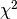.
- dataset : Dataset
- A Dataset object containing all information about the data
- fit_function : function
A user-defined Python function to be fitted to the data. This function’s first argument must be the independent variable x. All other arguments must be named and have default values given. These defaults are used as a starting point for the actual minimization. For example, a simple linear function would be defined like:
>>> def linear_2par(x, slope=1., y_intercept=0.): ... return slope * x + y_intercept
Be aware that choosing sensible initial values for the parameters is often crucial for a succesful fit, particularly for functions of many parameters.
- external_fcn : function (optional)
An external FCN (function to minimize). This function must have the following call signature:
>>> FCN(xdata, ydata, cov_mat, fit_function, parameter_values)
It should return a float. If not specified, the default FCN is used. This should be sufficient for most fits.
- fit_label :
 -formatted string (optional)
-formatted string (optional) - A name/label/short description of the fit function. This appears in the
legend describing the fitter curve. If omitted, this defaults to the
fit function’s expression.
- call_external_fcn(*parameter_values)¶
Wrapper for the external FCN. Since the actual fit process depends on finding the right parameter values and keeping everything else constant we can use the Dataset object to pass known, fixed information to the external FCN, varying only the parameter values.
- parameter_values : sequence of values
- the parameter values at which FCN is to be evaluated
- call_minimizer(final_fit=True, verbose=False)¶
Instructs the minimizer to do a minimization.
- constrain_parameters(parameters, parvals, parerrs)¶
Constrain the parameter with the given name to 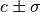.
This is achieved by adding an appropriate penalty term to the function, see function chi2.
parameters list of paramter id’s or names to constrain
parvals list of parameter values
parerrs list of errors on parameters
- current_cov_mat = None¶
the current covariance matrix used for the Fit
- dataset = None¶
this Fit instance’s child Dataset
- do_fit(quiet=False, verbose=False)¶
Runs the fit algorithm for this Fit object.
First, the Dataset is fitted considering only uncertainties in the y direction. If the Dataset has no uncertainties in the y direction, they are assumed to be equal to 1.0 for this preliminary fit, as there is no better information available.
Next, the fit errors in the x direction (if they exist) are taken into account by projecting the covariance matrix for the x errors onto the y covariance matrix. This is done by taking the first derivative of the fit function in each point and “projecting” the x error onto the resulting tangent to the curve.
This last step is repeated until the change in the error matrix caused by the projection becomes negligible.
- quiet : boolean (optional)
- Set to True if no output should be printed.
- verbose : boolean (optional)
- Set to True if more output should be printed.
- external_fcn = None¶
the (external) function to be minimized for this Fit
- fit_function = None¶
the fit function used for this Fit
- fix_parameters(*parameters_to_fix)¶
Fix the given parameters so that the minimizer works without them when do_fit is called next. Parameters can be given by their names or by their IDs.
- get_current_fit_function()¶
This method returns a function object corresponding to the fit function for the current parameter values. The returned function is a function of a single variable.
- returns : function
- A function of a single variable corresponding to the fit function at the current parameter values.
- get_error_matrix()¶
This method returns the covariance matrix of the fit parameters which is obtained by querying the minimizer object for this Fit
- returns : numpy.matrix
- The covariance matrix of the parameters.
- get_function_error(x)¶
This method uses the parameter error matrix of the fit to calculate a symmetric (parabolic) error on the function value itself. Note that this method takes the entire parameter error matrix into account, so that it also accounts for correlations.
The method is useful if, e.g., you want to draw a confidence band around the function in your plot routine.
- x : float or sequence of float
- the values at which the function error is to be estimated
- returns : float or sequence of float
- the estimated error at the given point(s)
- get_parameter_errors(rounding=False)¶
Get the current parameter uncertainties from the minimizer.
- rounding : boolean (optional)
- Whether or not to round the returned values to significance.
- returns : tuple
- A tuple of the parameter uncertainties
- get_parameter_values(rounding=False)¶
Get the current parameter values from the minimizer.
- rounding : boolean (optional)
- Whether or not to round the returned values to significance.
- returns : tuple
- A tuple of the parameter values
- latex_parameter_names = None¶
- parameter names
- minimizer = None¶
this Fit‘s minimizer (Minuit)
- number_of_parameters = None¶
the total number of parameters
- parameter_names = None¶
the names of the parameters
- print_fit_details()¶
prints some fit goodness details
- print_fit_results()¶
prints fit results
- print_rounded_fit_parameters()¶
prints the fit parameters
- project_x_covariance_matrix()¶
Project elements of the x covariance matrix onto the total matrix.
This is done element-wise, according to the formula:
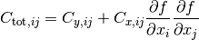
- release_parameters(*parameters_to_release)¶
Release the given parameters so that the minimizer begins to work with them when do_fit is called next. Parameters can be given by their names or by their IDs. If no arguments are provied, then release all parameters.
- set_parameters(*args, **kwargs)¶
Sets the parameter values (and optionally errors) for this fit. This is usually called just before the fit is done, to establish the initial parameters. If a parameter error is omitted, it is set to 1/1000th of the parameter values themselves. If the default value of the parameter is 0, it is set, by exception, to 0.001.
This method accepts up to two positional arguments and several keyword arguments.
- args[0] : tuple/list of floats (optional)
- The first positional argument is expected to be a tuple/list containing the parameter values.
- args[1] : tuple/list of floats (optional)
- The second positional argument is expected to be a tuple/list of parameter errors, which can also be set as an approximate estimate of the problem’s uncertainty.
- no_warning : boolean (optional)
- Whether to issue warnings (False) or not (True) when communicating with the minimizer fails. Defaults to False.
Valid keyword argument names are parameter names. The keyword arguments themselves may be floats (parameter values) or 2-tuples containing the parameter values and the parameter error in that order:
- <parameter_name> : float or 2-tuple of floats (optional)
- Set the parameter with the name <’parameter_name’> to the value given. If a 2-tuple is given, the first element is understood to be the value and the second to be the parameter error.
- xdata = None¶
the x coordinates of the data points used for this Fit
- ydata = None¶
the y coordinates of the data points used for this Fit
- kafe.fit.build_fit(dataset, fitfunc, fitlabel='untitled', initial_fit_parameters=None, constrained_parameters=None)¶
This helper fuction creates a Fit from a series of keyword arguments.
Valid keywords are:
dataset : a kafe Dataset
- fitfunc : a python function, eventually with
- @FitFunction, @LATEX and @FitFunction decorators
fitlabel : name for this fit
- fitparameters : None or 2-tuple of list, tuple/np.array of floats
- specifying initial parameter values and errors
- constrained_parameters: None or 3-tuple of list, tuple/np.array`
- of one string and 2 floats specifiying the names, values and uncertainties of constraints to apply to model parameters
returns Fit object
- kafe.fit.chi2(xdata, ydata, cov_mat, fit_function, parameter_values, constrained_parameters=None)¶
The implementation. Calculates according to the formula:
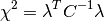
Here,
 is the residual vector
is the residual vector  and
and  is the covariance matrix.
is the covariance matrix.If a constraint 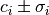 is applied to a parameter i, a penalty term is added for each constrained parameter according to:
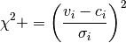
- xdata : iterable
- The x measurement data
- ydata : iterable
- The y measurement data
- cov_mat : numpy.matrix
- The total covariance matrix
- fit_function : function
- The fit function

constrained_parameters : None or list of two iterables with a length equal to the number of parameters. An uncertainty of 0 means that a parameter remains unconstrained.
- parameter_values : list/tuple
- The values of the parameters at which should be evaluated.
- kafe.fit.round_to_significance(value, error, significance=2)¶
Rounds the error to the established number of significant digits, then rounds the value to the same order of magnitude as the error.
- value : float
- value to round to significance
- error : float
- uncertainty of the value
- significance : int (optional)
- number of significant digits of the error to consider
function_library Module¶
Collection of model functions
function_tools Module¶
- kafe.function_tools.ASCII(**kwargs)¶
Optional decorator for fit functions. This overrides a FitFunction’s plain-text (ASCII) attributes. The new values for these attributes must be passed as keyword arguments to the decorator. Possible arguments:
- name : string
- Plain-text representation of the function name.
- parameter_names : list of strings
- List of plain-text representations of the function’s arguments. The length of this list must be equal to the function’s argument number. The argument names should be in the same order as in the function definition.
- x_name : string
- Plain-text representation of the independent variable’s name.
- expression : string
- Plain-text-formatted expression representing the function’s formula.
- class kafe.function_tools.FitFunction(f)¶
Decorator class for fit functions. If a function definition is decorated using this class, some information is collected about the function which is relevant to the fitting process, such as the number of parameters, their names and default values. Some details pertaining to display and representation are also set, such as
representations of
the parameter names and the function name. Other decorators can be applied
to a function object to specify things such as a or
plain-text expression for the fit function.- derive_by_parameters(x_0, precision_spec, parameter_list)¶
Returns the gradient of func with respect to its parameters, i.e. with respect to every variable of func except the first one.
- precision_spec : float or iterable of floats
- An array of floats indicating the initial point spacing for numerically evaluating the derivative. Can be a single float value to use the same spacing for every derivation.
- derive_by_x(x_0, precision_list, parameter_list)¶
If x_0 is iterable, gives the array of derivatives of a function 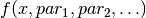 around 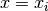 at every
 in
in  . If x_0 is not iterable, gives the
derivative of a function around
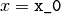.
. If x_0 is not iterable, gives the
derivative of a function around
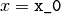.
- evaluate(x_0, parameter_list)¶
Evaluate the fit function at an x-value or at an array of x-values for the parameter values in prarameter_list.
x_0 float or array of floats
parameter_list values of function parameters
returns function value(s)
- expression = None¶
a math expression (string) representing the function’s result
- get_function_equation(equation_format='latex', equation_type='full', ensuremath=True)¶
Returns a string representing the function equation. Supported formats are
and ASCII inline math. Note that
math is wrapped by default in an \ensuremath{} expression. If this
is not desired behaviour, the flag ensuremath can be set to
False.- equation_format : string (optional)
- Can be either “latex” (default) or “ascii”.
- equation_type : string (optional)
Can be either “full” (default), “short” or “name”. A “name”-type equation returns a representation of the function name:
fA “short”-type equation limits itself to the function name and variables:
f(x, par1, par2)
A “full”-type equation includes the expression which the function calculates:
f(x, par1, par2) = par1 * x + par2
- ensuremath : boolean (optional)
- If a math equation is requested, True
(default) will wrap the resulting expression in an
\ensuremath{} tag. Otherwise, no wrapping is done.
- latex_expression = None¶
a
math expression, the function’s result
- latex_name = None¶
The function’s name in
- latex_parameter_names = None¶
A list of parameter names in
- latex_x_name = None¶
A
symbol for the independent variable.
- name = None¶
The name of the function
- number_of_parameters = None¶
The number of parameters
- parameter_defaults = None¶
The default values of the parameters
- parameter_names = None¶
The names of the parameters
- x_name = None¶
The name given to the independent variable
- kafe.function_tools.LaTeX(**kwargs)¶
Optional decorator for fit functions. This overrides a FitFunction’s latex_ attributes. The new values for the latex_ attributes must be passed as keyword arguments to the decorator. Possible arguments:
- name : string
- representation of the function name.
- parameter_names : list of strings
- List of representations of the function’s arguments.
The length of this list must be equal to the function’s argument
number. The argument names should be in the same order as in the
function definition.
- x_name : string
- representation of the independent variable’s name.
- expression : string
- -formatted expression representing the
function’s formula.
- kafe.function_tools.derivative(func, derive_by_index, variables_tuple, derivative_spacing)¶
Gives 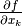 for 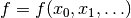. func is
 , variables_tuple is 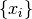 and
derive_by_index is
, variables_tuple is 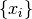 and
derive_by_index is  .
.
- kafe.function_tools.outer_product(input_array)¶
Takes a NumPy array and returns the outer (dyadic, Kronecker) product with itself. If input_array is a vector
 , this returns
, this returns
 .
.
minuit Module¶
- kafe.minuit.D_MATRIX_ERROR = {0: 'Error matrix not calculated', 1: 'Error matrix approximate!', 2: 'Error matrix forced positive definite!', 3: 'Error matrix accurate'}¶
Error matrix status codes
- class kafe.minuit.Minuit(number_of_parameters, function_to_minimize, parameter_names, start_parameters, parameter_errors, quiet=True, verbose=False)¶
A class for communicating with ROOT’s function minimizer tool Minuit.
- FCN_wrapper(number_of_parameters, derivatives, f, parameters, internal_flag)¶
This is actually a function called in ROOT and acting as a C wrapper for our FCN, which is implemented in Python.
This function is called by Minuit several times during a fit. It doesn’t return anything but modifies one of its arguments (f). This is ugly, but it’s how ROOT‘s TMinuit works. Its argument structure is fixed and determined by Minuit:
- number_of_parameters : int
- The number of parameters of the current fit
- derivatives : C array
- If the user chooses to calculate the first derivative of the function inside the FCN, this value should be written here. This interface to Minuit ignores this derivative, however, so calculating this inside the FCN has no effect (yet).
- f : C array
- The desired function value is in f[0] after execution.
- parameters : C array
- A C array of parameters. Is cast to a Python list
- internal_flag : int
- A flag allowing for different behaviour of the function. Can be any integer from 1 (initial run) to 4(normal run). See Minuit‘s specification.
- fix_parameter(parameter_number)¶
Fix parameter number <parameter_number>.
- parameter_number : int
- Number of the parameter to fix.
- function_to_minimize = None¶
the actual FCN called in FCN_wrapper
- get_chi2_probability(n_deg_of_freedom)¶
Returns the probability that an observed exceeds the calculated value of for this fit by chance, even for a correct model. In other words, returns the probability that a worse fit of the model to the data exists. If this is a small value (typically <5%), this means the fit is pretty bad. For values below this threshold, the model very probably does not fit the data.
- n_def_of_freedom : int
- The number of degrees of freedom. This is typically
 .
.
- get_contour(parameter1, parameter2, n_points=20)¶
Returns a list of points (2-tuples) representing a sampling of the
 contour of the TMinuit fit. The FCN has to be
minimized before calling this.
contour of the TMinuit fit. The FCN has to be
minimized before calling this.- parameter1 : int
- ID of the parameter to be displayed on the x-axis.
- parameter2 : int
- ID of the parameter to be displayed on the y-axis.
- n_points : int (optional)
- number of points used to draw the contour. Default is 20.
- returns : 2-tuple of tuples
- a 2-tuple (x, y) containing n_points+1 points sampled along the contour. The first point is repeated at the end of the list to generate a closed contour.
- get_error_matrix()¶
Retrieves the parameter error matrix from TMinuit.
return : numpy.matrix
- get_fit_info(info)¶
Retrieves other info from Minuit.
- info : string
Information about the fit to retrieve. This can be any of the following:
- 'fcn': FCN value at minimum,
- 'edm': estimated distance to minimum
- 'err_def': Minuit error matrix status code
- 'status_code': Minuit general status code
- get_parameter_errors()¶
Retrieves the parameter errors from TMinuit.
- return : tuple
- Current Minuit parameter errors
- get_parameter_info()¶
Retrieves parameter information from TMinuit.
- return : list of tuples
- (parameter_name, parameter_val, parameter_error)
- get_parameter_name(parameter_nr)¶
Gets the name of parameter number parameter_nr
- parameter_nr : int
- Number of the parameter whose name to get.
- get_parameter_values()¶
Retrieves the parameter values from TMinuit.
- return : tuple
- Current Minuit parameter values
- max_iterations = None¶
maximum number of iterations until TMinuit gives up
- minimize(final_fit=True, log_print_level=2)¶
Do the minimization. This calls Minuit‘s algorithms MIGRAD for minimization and, if final_fit is True, also HESSE for computing/checking the parameter error matrix.
- number_of_parameters = None¶
number of parameters to minimize for
- release_parameter(parameter_number)¶
Release parameter number <parameter_number>.
- parameter_number : int
- Number of the parameter to release.
- reset()¶
Execute TMinuit’s mnrset method.
- set_err(up_value=1.0)¶
Sets the UP value for Minuit.
- up_value : float (optional, default: 1.0)
- This is the value by which FCN is expected to change.
- set_parameter_errors(parameter_errors=None)¶
Sets the fit parameter errors. If parameter_values=`None`, sets the error to 10% of the parameter value.
- set_parameter_names(parameter_names)¶
Sets the fit parameters. If parameter_values=`None`, tries to infer defaults from the function_to_minimize.
- set_parameter_values(parameter_values)¶
Sets the fit parameters. If parameter_values=`None`, tries to infer defaults from the function_to_minimize.
- set_print_level(print_level=1)¶
Sets the print level for Minuit.
- print_level : int (optional, default: 1 (frugal output))
- Tells TMinuit how much output to generate. The higher this value, the more output it generates.
- set_strategy(strategy_id=1)¶
Sets the strategy Minuit.
- strategy_id : int (optional, default: 1 (optimized))
- Tells TMinuit to use a certain strategy. Refer to TMinuit‘s documentation for available strategies.
- tolerance = None¶
TMinuit tolerance
- update_parameter_data(show_warnings=False)¶
(Re-)Sets the parameter names, values and step size on the C++ side of Minuit.
- kafe.minuit.P_DETAIL_LEVEL = 1¶
default level of detail for TMinuit’s output (typical range: -1 to 3, default: 1)
plot Module¶
- class kafe.plot.Plot(*fits, **kwargs)¶
Bases: object
The constuctor accepts a series of Fit objects as positional arguments. Some keyword arguments can be provided to override the defaults.
- axis_labels = None¶
axis labels
- compute_plot_range(include_error_bars=True)¶
Compute the span of all child datasets and sets the plot range to that
- draw_fit_parameters_box(plot_spec=0)¶
Draw the parameter box to the canvas
- plot_spec : int, list of ints, string or None (optional, default: 0)
- Specify the plot id of the plot for which to draw the parameters. Passing 0 will only draw the parameter box for the first plot, and so on. Passing a list of ints will only draw the parameters for plot ids inside the list. Passing 'all' will print parameters for all plots. Passing None will return immediately doing nothing.
- draw_legend()¶
Draw the plot legend to the canvas
- extend_span(axis, new_span)¶
Expand the span of the current plot.
This method extends the current plot span to include new_span
- init_plots()¶
Initialize the plots for each fit.
- on_draw(event)¶
Function to call when a draw event occurs.
- plot(p_id, show_data=True, show_function=True)¶
Plot the Fit object with the number p_id to its figure.
- plot_all(show_info_for='all', show_data_for='all', show_function_for='all')¶
Plot every Fit object to its figure.
- plot_range = None¶
plot range
- plot_style = None¶
plot style
- save(output_file)¶
Save the Plot to a file.
- show()¶
Show the Plot in a matplotlib interactive window.
- show_legend = None¶
whether to show the plot legend (True) or not (False)
- class kafe.plot.PlotStyle¶
Class for specifying a style for a specific plot. This object stores a progression of marker and line types and colors, as well as preferences relating to point size and label size. These can be overriden by overwriting the instance variables directly. A series of get_... methods are provided which go through these lists cyclically.
- get_line(idm)¶
Get a specific line type. This runs cyclically through the defined defaults.
- get_linecolor(idm)¶
Get a specific line color. This runs cyclically through the defined defaults.
- get_marker(idm)¶
Get a specific marker type. This runs cyclically through the defined defaults.
- get_markercolor(idm)¶
Get a specific marker color. This runs cyclically through the defined defaults.
- get_pointsize(idm)¶
Get a specific point size. This runs cyclically through the defined defaults.
- kafe.plot.label_to_latex(label)¶
Generates a simple LaTeX-formatted label from a plain-text label. This treats isolated characters and words beginning with a backslash as mathematical expressions and surround them with $ signs accordingly.
- label : string
- Plain-text string to convert to LaTeX.
- kafe.plot.pad_span(span, pad_coeff=1, additional_pad=None)¶
Enlarges the interval span (list of two floats) symmetrically around its center to length pad_coeff. Optionally, an additional_pad argument can be specified. The returned span is then additionally enlarged by that amount.
additional_pad can also be a list of two floats which specifies an asymmetric amount by which to enlarge the span. Note that in this case, positive entries in additional_pad will enlarge the span (move the interval end away from the interval center) and negative amounts will shorten it (move the interval end towards the interval center).
latex_tools Module¶
- kafe.latex_tools.ascii_to_latex_math(str_ascii, monospace=True, ensuremath=True)¶
Escapes certain characters in an ASCII input string so that the result can be included in math mode without error.
- str_ascii : string
- A plain-text string containing characters to be escaped for
math mode.
- monospace : boolean (optional)
- Whether to render the whole expression as monospace. Defaults to True.
- ensuremath : boolean (optional)
- If this is True, the resulting formula is wrapped in an \ensuremath{} tag. Defaults to True.
numeric_tools Module¶
- kafe.numeric_tools.MinuitCov_to_cor(cov_mat)¶
Converts a covariance matrix as returned by Minuit to the corresponding correlation matrix; note that the Minuit covariance matrix may contain lines/rows with zeroes if parameters are fixed
- cov_mat : numpy.matrix
- The Minuit covariance matrix to convert.
- kafe.numeric_tools.cor_to_cov(cor_mat, error_list)¶
Converts a correlation matrix to a covariance matrix according to the formula

- cor_mat : numpy.matrix
- The correlation matrix to convert.
- error_list : sequence of floats
- A sequence of statistical errors. Must be of the same length as the diagonal of cor_mat.
- kafe.numeric_tools.cov_to_cor(cov_mat)¶
Converts a covariance matrix to a correlation matrix according to the formula

- cov_mat : numpy.matrix
- The covariance matrix to convert.
- kafe.numeric_tools.extract_statistical_errors(cov_mat)¶
Extracts the statistical errors from a covariance matrix. This means it returns the (elementwise) square root of the diagonal entries
- cov_mat
- The covariance matrix to extract errors from. Type: numpy.matrix
- kafe.numeric_tools.make_symmetric_lower(mat)¶
Copies the matrix entries below the main diagonal to the upper triangle half of the matrix. Leaves the diagonal unchanged. Returns a NumPy matrix object.
- mat : numpy.matrix
- A lower diagonal matrix.
- returns : numpy.matrix
- The lower triangle matrix.
- kafe.numeric_tools.zero_pad_lower_triangle(triangle_list)¶
Converts a list of lists into a lower triangle matrix. The list members should be lists of increasing length from 1 to N, N being the dimension of the resulting lower triangle matrix. Returns a NumPy matrix object.
For example:
>>> zero_pad_lower_triangle([ [1.0], [0.2, 1.0], [0.01, 0.4, 3.0] ]) matrix([[ 1. , 0. , 0. ], [ 0.2 , 1. , 0. ], [ 0.01, 0.4 , 3. ]])
- triangle_list : list
- A list containing lists of increasing length.
- returns : numpy.matrix
- The lower triangle matrix.
stream Module¶
- class kafe.stream.StreamDup(out_file, suppress_stdout=False)¶
Bases: object
Object for simultaneous logging to stdout and files. This object provides a file/like object for the outout to be written to. Writing to this object will write to stdout (usually the console) and to a file.
- out_file : file path or file-like object or list of file paths ...
- File(s) to which to log the output, along with stdout. If a file exists on disk, it will be appended to.
- suppress_stdout : boolean
- Whether to log to stdout simultaneously (False) or suppress output to stdout (True). Default to False.
- fileno()¶
Returns the file handler id of the main (first) output file.
- flush()¶
- write(message)¶
- write_timestamp(prefix)¶
- write_to_file(message)¶
- write_to_stdout(message, check_if_suppressed=False)¶
Explicitly write to stdout. This method will not check by default whether suppress_stdout is set for this StreamDup. If check_if_suppressed is explicitly set to True, then this check occurs.